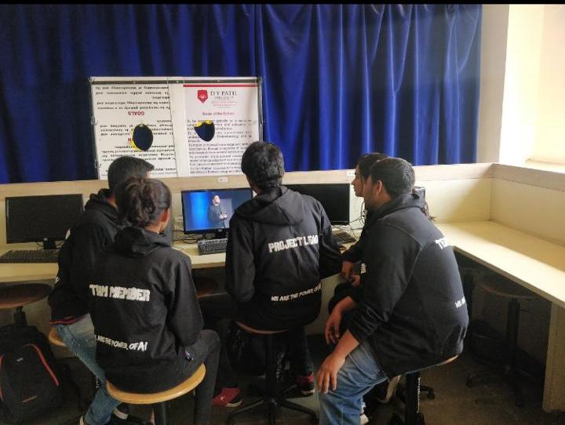

MANOJ SINGH CHAUHAN AND TEAM MEMBERS
Working on :
THE INCREASE OF DEATH CASUALTIES IN ROAD ACCIDENT DUE TO DELAYED TREATMENT AND NOT ABLE TO IDENTIFY THE VICTIM.


It was a great video to watch. The method of making us understand the idea was was innovative. Great projects were shown to give us motivation and idea. Very informative video.
Every common layman who travels by road ,Hospital,Ambulance services,Daily commuter(road),Commercial drivers,Law enforcement agencies.
Poor outreach, Poor mode of communication,Traffic,Lack of doctors,Lack of medical instruments,Unable to identify victim